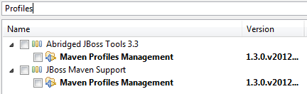

JBoss Maven Integration
The Maven Profile management user interface introduced in JBoss Tools 3.3.0.M3 is now available as a standalone feature.
This change allows you to install the Maven Profile Management on Eclipse distributions without dragging any WTP dependencies.
See JBIDE-10604 for more details.If a maven project contains a persistence.xml, the JPA Facet will be automatically applied during m2e's project configuration, using the "Discover annotated classes automatically" setting.
Any existing JPA configuration will be untouched.
The Maven JPA configurator feature can be selected from the Abridged or Maven Support categories in the JBoss Tools update site :

See JBIDE-10750 for more details.
If m2e's configured as such, the JBoss Releases repository index will be downloaded/updated on workspace startup. This will allow users to search and find JBoss artifacts out-of-the-box. However, keep in mind the JBoss repository will need to be explicitely declared in your settings.xml (or pom.xml) for your projects to build. Fortunately, you can add it easily via the JBoss repository template in m2e's XML editor.
See JBIDE-9688 for more details.
Installing the JBoss Maven Facet to an Eclipse project will create a much better, cleaner pom.xml :
- does not add plugin configuration when the existing values correspond to maven defaults
- locks down plugin versions
- remove java nature from EAR, POM projects
- adds children projects to parent's dependency management section
- makes the plugin configurations respect the corresponding eclipse facet version
- removes custom output directory settings, everything goes to target/classes now
- JBoss Seam is now referenced as an ejb type dependency everywhere.
- adds support for web fragments
See JBIDE-10762 for more details.